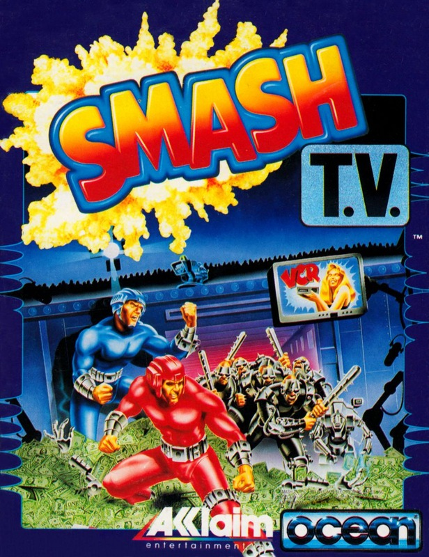
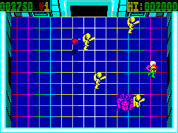
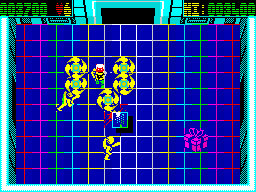
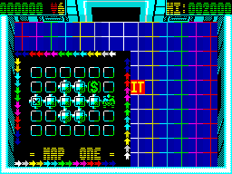

Smash TV


{kind=link}

| Publisher: | Ocean |
| Price: | £10.99 |
| Year: | 1991 |
| Source: | CRASH, Issue 94 |

It’s 1999 and the nation’s favourite gameshow is the Running Man-style Smash TV, a violent blend of the movie Rollerball and The Price Is Right. Basically, screw this game up and you’re dead meat (but that’s got to be preferable to a Paul Daniels show!). With glittery suit and rotating bow tie firmly in place, MARK CASWELL becomes the MC for an evening’s carnage. IT’S SHOWTIME!

People sure have weird tastes in the year 1999, getting their kicks by watching the most popular gameshow on TV — the sensational and ultra-violent Smash TV. Based on the highly successful Williams coin-op, you play a contestant who risks life and limb in three nightmarish game zones. Armed with a low-powered gun, you enter the hazardous world of the TV studio, and so the fight of your life begins.
Smash TV starts in an empty studio with exits at the four main points of the compass. Empty, that is, until the savage denizens of the game appear and try to shorten your life expectancy by a good few years. They burst out any of the four exits and, in true Robotron style, stick the boot in (very hard). They include psychopathic droids, baseball bat-wielding maniacs, tanks, rolling balls (no comment) and white tadpoles (supposedly poisonous snakes).
I’LL BUY THAT FOR A DOLLAR!

good did he? (I thought he looked quite
smart in the $64,000 dollar question
— Ed)
As you battle through the maze of single-screen studio sets, there are plenty of bonuses to pick up, which divide into two types: weapons and prizes. Weapons include grenades, rocket launchers, spinning shurikens and mace balls, and believe me, they’re vital to survival on later levels. Prizes are cash and gold, or luxury items such as cars, holidays, washing machines and so on (cuddly toy?).
But collecting objects isn’t the main point of the game; you’re there to kick arse (pardon my French) and get out in one piece (two at the most).
Of course, hits to your frail body mount up, and getting whacked over the bonce once too often means you’ll be playing your little golden harp before you can say ‘Leslie Crowther’. But thankfully there are energy top-ups available (in the shape of hearts) — watch out for them.
WHO’S THAT FAT BA-
If, by any chance, you survive to the end of a level you can’t afford to relax ’cos you then have to face a big guardian. On level one, it’s a skinhead with tractor wheels welded where his legs should be. You may laugh at him now but he’s one mean dude. However, a few choice blasts of the old rocket launcher should turn him into a neat little scrap heap. [If you survive then] your cash and prizes are totted up and added to your score, then it’s on to level two, whose denizens would make Hannibal ‘The Cannibal’ Lecter look like a boy scout.
And finally, to round Smash TV off, you have to face the gameshow host himself (brown trouser time, methinks). He’s huge, mean and the only thing that stands between you and continued good health. Personally, I’d prefer to be a contestant on The Generation Game — at least Bruce Forsyth doesn’t brandish a huge gun (he leaves the strong-arm stuff to the bint with the short skirts).
LIFE IS THE NAME OF THE GAME

Game of the future. Oh, by the way, if
you fail you will end up splattered around
the studio.
The arcade version of Smash TV is among my all-time top five awesome games. When someone (I forget who) told me Ocean were converting this to the Speccy, I thought ‘no way’, but it seems I have to eat my words, (watch that diet, Corky — Ed).
Probe had a hand in the programming of this product, which just oozes quality. The sprites are little short of amazing. They’re bold, colourful and they don’t half shift! On my first few games I had a tough time keeping track of the enemy forces as they sped around the screen. But despite early feelings of frustration, the darn game is so playable you have to come back for just one more go.
The arcade version is very violent, sporting several types of gory death for intrepid heroes. Sadly, these have been cut from the computer version (Corky, you’re a sicko! -Ed), but death is still only just around the corner for the foolhardy player.
As far as I’m concerned, Smash TV is one of the best games to have appeared this year, and so it deserves one of the highest marks that I’ve ever awarded a game. Well done, Ocean.
MARK — 96%
What’s all this gameshow milarky, then?

it could be time to get your maps out
for the lads and find out where you are.
Probe Software are the guys responsible for the Speccy version of Smash TV, or more precisely, two programmer types named Dave Perry and Nick Bruty. Between them they’ve programmed many of the games you’ve undoubtedly purchased over the past few years. These include Savage, Dan Dare III, Extreme and Teenage Mutant Hero Turtles (plus loadsa stuff for other computers).
The Spectrum version of Smash TV is a very close conversion of the Williams arcade coin-op, (Williams are themselves very prolific with Defender, Narc, Joust and Trog in their arcade repertoire). Of course, due to the memory limitations of the Spectrum (the old story), a lot of the coin-op’s features had to be left out. But Messrs Bruty and Perry have managed amazingly well.
The good news for 48K owners is that Smash TV works on their computer (hurrah!!). Smash TV is THE gameshow of the ’90s, and fun for all the family.

If you have any Amiga-owning buddies who think the Spectrum belongs in a museum along with the counting frame and Betamax video recorder, sit them in front of your machine and load up a copy of Ocean’s Smash TV. It’ll have them crying into their £30-a-throw software collection, wishing they hadn’t wasted their money upgrading. Smash TV is quite simply the best game I’ve ever seen on the Spectrum, and the perfect answer for those who think the Speccy is dying. Two short years ago, I didn’t think it possible to use so much colour with so little clash. For my money, the sheer speed and playability of Smash TV make it the best game yet. Ocean have a real winner on their hands.
NICK — 97%
RATING
Fast, frantic and, above all, violent. Smash TV is simply a must-buy.
| Presentation: | 91% |
| Graphics: | 90% |
| Sound: | 85% |
| Playability: | 95% |
| Addictivity: | 93% |
| Overall: | 97% |